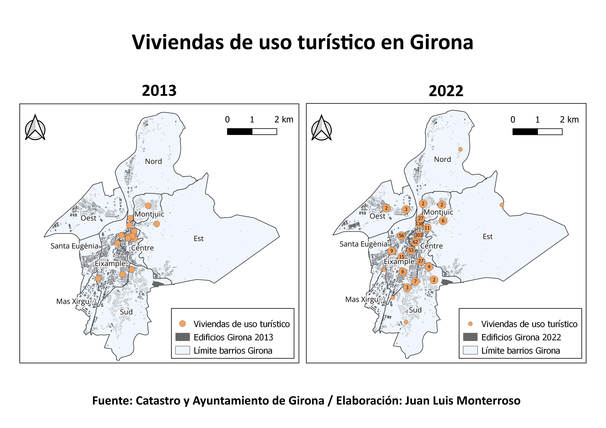

AQUÍ VA EL SCROLLAMA CON LOS ALCALDES
El legado que han dejado los últimos alcaldes de Girona se puede resumir en tres apuestas destacadas: la rehabilitación de la ciudad, la mejora en la movilidad y las acciones enfocadas en el turismo. Puede parecer que las inversiones más importantes han ido enfocadas al apartado turístico pero los presupuestos municipales no lo reflejan así.
Es cierto que el presupuesto destinado al turismo se ha triplicado en los últimos 8 años, pasando de los cerca de 2'5 millones de euros que se presupuestaron en 2015 a los más de 6 millones del último ejercicio. Sin embargo, son otras las partidas que reciben más fondos. Como podemos ver en el gráfico anterior, se ha invertido notablemente en aquellos departamentos que se encargan de los derechos sociales: empleo, protección social, vivienda y salud, entre otros. Asimismo, se ha hecho un gran esfuerzo en dotar económicamente a los departamentos encargados de mejorar la movilidad y aquellos relacionados con la cultura en la ciudad: bibliotecas, museos, teatros y demás relacionados.
Cabe destacar, que los presupuestos municipales dependen en gran medida de lo recaudado en ejercicios anteriores y de los fondos autonómicos, estatales y europeos. Por ello, algunas medidas se pueden ver perjudicadas o beneficiadas dependiendo del ejercicio.
Uno de los indicadores que nos demuestra el crecimiento de la ciudad es el considerable aumento de habitantes que están empadronados en ella. Como podemos ver en el siguiente gráfico, Girona tenía algo más de 70.000 empadronados en 1996. Actualmente, la ciudad supera los 100.000 empadronados, lo que supone un aumento del 45% en 26 años.
Este crecimiento demográfico no se debe exclusivamente a la población natural. Los movimientos migratorios, la centralidad del sector económico y los puestos de trabajo, añadidos al aumento de la población estudiantil, explican el crecimiento poblacional de Girona.
Los vecinos que llevan décadas en la ciudad han visto cómo Girona ya no es como la conocieron. Aquella ciudad gris y antigua se ha convertido en una urbe atractiva para gente que busca un lugar tranquilo, accesible y con una buena calidad de vida para visitar o instalarse definitivamente.
El transporte sostenible ha sido una apuesta de los últimos gobiernos de la ciudad.
Girona ha potenciado la movilidad en bicicleta, elevando año tras año el número de Girocletas, estaciones y aparcamientos de este sistema de transporte público municipal. También se han visto aumentadas las líneas de autobús y las de tren.
Sin embargo, el aumento demográfico no ha ido acompañado de una mayor dotación de equipamientos urbanos.
La ciudad cuenta prácticamente con los mismos hospitales, centros de educación e instalaciones deportivas y culturales que tenía hace 10 años. Destacan la reducción de instalaciones de administración pública, de guarderías y de centros universitarios.
Que una ciudad se convierta en atractiva para nuevos vecinos, turistas e inversores muchas veces implica que haya gente que se quede atrás y no pueda asumir el mayor coste de vida. Aunque hemos visto que se han dedicado grandes partidas presupuestarias a todo lo relacionado con los derechos sociales, hay datos que demuestran que cada vez hay más familias que necesitan ayudas públicas para salir adelante.
Es cierto que la tasa de paro se ha reducido en los últimos años debido, sobre todo, al aumento de los puestos de trabajo en el sector servicios. Pero a la vez, han aumentado los beneficiarios de renta mínima de inserción, las familias atendidas por servicios sociales y las personas en situación de calle, entre otros indicadores.
El acceso a la vivienda está suponiendo un quebradero de cabeza para los antiguos y nuevos vecinos. La construcción de nueva vivienda no ha ido al mismo ritmo que el crecimiento demográfico de la ciudad y el porcentaje de viviendas vacías ha ido reduciéndose década tras década.
La escasez de vivienda vacía, sumada a la especulación inmobiliaria y el aumento del alquiler de temporada ha supuesto que el precio de la vivienda haya aumentado en casi un 50% en los últimos 9 años.
Como vemos en el siguiente gráfico, los precios del alquiler bajaron en el período 2007-2014 debido a la crisis inmobiliaria.
Sin embargo, a partir de 2014 alquilar un piso en Girona ha pasado de costar 466€ de media a los casi 700€ de 2023. Un aumento considerable que está generando problemas de acceso a la vivienda.
En un municipio donde ha crecido la población estudiantil procedente de fuera de Girona y se ha incrementado la oferta turística, el alquiler de temporada se ha convertido en un gran fuente de ingresos para aquellos poseedores de vivienda vacía. En los últimos años han proliferado particulares y nuevas empresas inmobiliarias que han visto en la vivienda de uso turístico una manera de especular con un bien de primera necesidad.
En el año 2013, Girona registraba 19 viviendas de uso turístico. Casi 10 años después, la cifra ha ascendido hasta 748, siendo la zona del Barri Vell la más afectada por este aumento.
El 18 de septiembre de 2023 el pleno de Girona aprobó con los votos de Guanyem, Junts y ERC fijar un tope máximo del 4% de pisos turísticos en la ciudad. El PP y el PSC votaron en contra y Vox se abstuvo.
Hasta ese momento, en la ciudad existía un tope del 15% de viviendas turísticas en cada barrio. Ese máximo se podía superar siempre y cuando la nueva licencia fuese en la primera planta del bloque e implicase la rehabilitación integral del edificio, incorporando elementos de accesibilidad como la instalación de un ascensor.
Cristina Andreu, teniente de alcaldía de Transición Ecológica y Transformación Urbana, indicaba que esta medida pretende "poner unas normas de juego", permitiendo "un crecimiento moderado de la actividad turística" y garantizando "el equilibrio entre el sector empresarial y la vida de barrio". Se mantiene el tope de 15% de viviendas de uso turístico por barrio y se añade a la suma total de inmuebles aquellas licencias de apartamentos y hogares compartidos, que hasta ahora computaban por separado.
Més Barri Girona, la plataforma ciudadana que lucha por el derecho a la vivienda y la vida de barrio, celebra estas últimas mejoras en materia de vivienda. Sin embargo, creen que aún hay mucho por hacer. Señalan que ese tope del 4% da margen a construir más de 1.000 viviendas de uso turístico en otras zonas de la ciudad que no están tan tensionadas como el Barri Vell. El objetivo de la plataforma es que haya una regulación que limite el crecimiento de viviendas turísticas a cero, ni uno más.
Por otro lado, la plataforma ve como la ciudad se enfrenta al augmento de alquiler de temporada, alquileres no turísticos inferiores a 1 año. Según Més Barri Girona, estos alquileres no arraigan en los barrios, ni crean red vecinal y comercial de primera necesidad. Además, ven como problemático el aumento del crecimiento del turismo ciclista, la falta de regulación de precios del alquiler y la especulación con el precio de la vivienda, entre otros.
Este proyecto forma parte del Trabajo de Fin de Máster de la edición 2022/2023 del Máster de Formación Permanente en Periodismo y Visualización de Datos de la Universidad de Alcalá (MPVD). El objetivo del mismo es aplicar todos los conocimientos adquiridos en el Máster y mostrar la evolución que ha experimentado la ciudad de Girona a través de los datos.
Las bases de datos sobre las que se trabaja son oficiales, públicas y abiertas. Estas bases pertenecen a: Open Data Girona, L'Observatori, Instituto Nacional de Estadística y Catastro.
Todas las herramientas usadas para la elaboración del proyecto son de Libre Uso. Para la extracción de datos se ha usado el paquete Wget de Cygwin. Para la limpieza y análisis de los datos se han usado las librerías Numpy y Pandas de Python y el software OpenRefine. Los gráficos se han realizado con el paquete Plotly de Python y las tablas, con LibreOffice e Inkscape. Las imágenes se han editado con Gimp e Inkscape. El mapa se ha realizado con el programa QGIS. La redacción del proyecto y de la página web ha sido con Emacs. Con Git se ha realizado el control de versiones y la publicación del proyecto en Github.
Asimismo, esta obra está bajo licencia de Creative Commons Reconocimiento-Compartir Igual 4.0 Internacional. Puede consultar los recursos usados en este proyecto en el siguiente repositorio de Github.